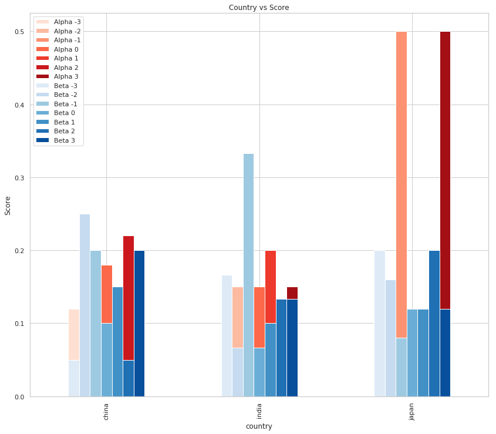

Bibliography Entrance
Table of Contents
Researching
- HTTSN - How To Take Smart Notes
This book describes the Slip-Box method developed by Niklas Luhmann. Its focus is on research writing, but seems like a good system for projects in general. It points that people are generally taught that you should work in a series of "next-steps", but if you are doing something creative (or at least something you haven't done before) then this is an impractical, if not impossible, way to work. Instead the author proposes that you use a system of note-taking to capture everything and then look for patterns in your notes - a bottoms-up approach rather than a top-down one.
[HTTSN] Ahrens S. How to take smart notes: one simple technique to boost writing, learning and thinking: for students, academics and nonfiction book writers. North Charleston, SC: CreateSpace; 2017. 170 p.
This is one way to encrypt the contents for cloud-synchronized folders using CryFS. I'm going to illustrate it using the Dropbox folder that the dropbox client creates.
Ubuntu currently (November 10, 2018) has CryFS as part of its packages so you can install it with apt.
sudo apt install cryfs
The cryfs command will create the two folders and set them up for you. The syntax is cryfs <target> <source>. The target will contain the encrypted folders so it will go in the Dropbox folder, while the source will hold the unencrypted files.
cryfs Dropbox/encrypted dropbox_source
This is the same command you would use on another computer to set-up the existing encrypted folder on your new computer. The source folder can be named differently, but the target folder and the password need to be the same one you used when you created it.
If you need to unmount it you can use fusermount.
fusermount -u dropbox_source
Since you are doing all this within your home directory you don't need root privileges (except to install cryfs with apt).
from io import StringIO
import requests
PRIDE_AND_PREJUDICE = "https://www.gutenberg.org/files/1342/1342-0.txt"
response = requests.get(PRIDE_AND_PREJUDICE)
assert response.ok
def coroutine(function):
"""Sets up the co-routine
Args:
function: coroutine function
Returns:
wrapper futnction that starts the co-routine
"""
def wrapper(*args, **kwargs):
co_routine = function(*args, **kwargs)
next(co_routine)
return co_routine
return wrapper
def process(lines, receiver, case_insensitive: bool=True):
"""Sends the lines in the text to the receiver
Args:
text: iterable text lines
receiver: thing to send lines to
case_insensitive: whether to lowercase the lines
"""
lines = StringIO(lines)
if case_insensitive:
processor = lambda line: line.lower()
else:
processor = lambda line: line
for line in lines:
receiver.send(processor(line))
@coroutine
def tokens(token, case_insensitive, receiver):
"""count tokens in the line"""
if case_insensitive:
token = token.lower()
while True:
text = (yield)
receiver.send(text.count(token))
@coroutine
def count(token):
counter = 0
try:
while True:
counter += (yield)
except GeneratorExit:
print(token, counter)
return
@coroutine
def fork(children):
while True:
data = (yield)
for child in children:
child.send(data)
return
text = StringIO(response.content.decode("utf-8"))
process(text, tokens("feelings", True, count("feelings")))
feelings 86
text = StringIO(response.content.decode("utf-8"))
process(text, tokens("beauty", True, count("beauty")))
beauty 27
text = response.content.decode("utf-8")
process(text, tokens("cried", True, count("cried")))
cried 91
This is a walk through the SQL Alchemy Tutorial. There's nothing original here, I'm just trying to re-acquaint myself with SQL Alchemy.
from sqlalchemy import (
create_engine,
Column,
Integer,
String,
)
from sqlalchemy.ext.declarative import declarative_base
from sqlalchemy.orm import sessionmaker
This is going to connect to SQLite (in memory).
engine = create_engine("sqlite:///:memory:", echo=True)
The echo parameter tells SQLAlchemy to start logging.
This creates a base-class that our classes will inherit from.
Base = declarative_base()
First we're going to create a User class that maps to a user-table in the database.
class User(Base):
__tablename__ = "users"
id = Column(Integer, primary_key=True)
name = Column(String)
fullname = Column(String)
password = Column(String)
def __repr__(self):
return "<User (name={} fullname={} password={})".format(self.name,
self.fullname,
self.password)
SQL Alchemy automatically creates a Table object for us.
User.__table__
Table('users', MetaData(bind=None), Column('id', Integer(), table=<users>, primary_key=True, nullable=False), Column('name', String(), table=<users>), Column('fullname', String(), table=<users>), Column('password', String(), table=<users>), schema=None)
If you try and print it you will only get the table-name 'users'.
Now we actually create the table using the Base object.
Base.metadata.create_all(engine)
2018-11-30 18:05:27,009 INFO sqlalchemy.engine.base.Engine SELECT CAST('test plain returns' AS VARCHAR(60)) AS anon_1
2018-11-30 18:05:27,010 INFO sqlalchemy.engine.base.Engine ()
2018-11-30 18:05:27,011 INFO sqlalchemy.engine.base.Engine SELECT CAST('test unicode returns' AS VARCHAR(60)) AS anon_1
2018-11-30 18:05:27,011 INFO sqlalchemy.engine.base.Engine ()
2018-11-30 18:05:27,013 INFO sqlalchemy.engine.base.Engine PRAGMA table_info("users")
2018-11-30 18:05:27,014 INFO sqlalchemy.engine.base.Engine ()
2018-11-30 18:05:27,015 INFO sqlalchemy.engine.base.Engine
CREATE TABLE users (
id INTEGER NOT NULL,
name VARCHAR,
fullname VARCHAR,
password VARCHAR,
PRIMARY KEY (id)
)
2018-11-30 18:05:27,016 INFO sqlalchemy.engine.base.Engine ()
2018-11-30 18:05:27,017 INFO sqlalchemy.engine.base.Engine COMMIT
bob = User(name="bob", fullname="Bob Dobolina", password="bob spelled backwards")
print(bob.name)
print(bob.fullname)
print(bob.id)
bob Bob Dobolina None
So far we've only been working with python objects, you need a session to actually talk to a database.
Session = sessionmaker(bind=engine)
session = Session()
session.add(bob)
This still doesn't actually add it to the database, we need to commit it. This is useful because you can continue to create objects and update them without continuously hitting the database.
Now we actually do our first communication with the database.
session.commit()
2018-12-03 14:39:51,652 INFO sqlalchemy.engine.base.Engine BEGIN (implicit)
2018-12-03 14:39:51,655 INFO sqlalchemy.engine.base.Engine INSERT INTO users (name, fullname, password) VALUES (?, ?, ?)
2018-12-03 14:39:51,656 INFO sqlalchemy.engine.base.Engine ('bob', 'Bob Dobolina', 'bob spelled backwards')
2018-12-03 14:39:51,658 INFO sqlalchemy.engine.base.Engine COMMIT
print("Bob's ID: {}".format(bob.id))
Bob's ID: 1
Even though we didn't specify the ID, it gets added when the entry is committed to the database.
Instead of adding them one at a time you can pass in a list of users.
session.add_all([
User(name="ted", fullname="Ted Thompson", password="wordpass"),
User(name="tom", fullname="Tom Tuttle", password="tacoma")
])
session.commit()
2018-12-03 14:46:48,764 INFO sqlalchemy.engine.base.Engine INSERT INTO users (name, fullname, password) VALUES (?, ?, ?)
2018-12-03 14:46:48,765 INFO sqlalchemy.engine.base.Engine ('ted', 'Ted Thompson', 'wordpass')
2018-12-03 14:46:48,766 INFO sqlalchemy.engine.base.Engine INSERT INTO users (name, fullname, password) VALUES (?, ?, ?)
2018-12-03 14:46:48,767 INFO sqlalchemy.engine.base.Engine ('tom', 'Tom Tuttle', 'tacoma')
2018-12-03 14:46:48,768 INFO sqlalchemy.engine.base.Engine COMMIT
Now we can make a query to see what's there.
for row in session.query(User).order_by(User.id):
print(row.id, row.fullname)
2018-12-03 14:48:53,556 INFO sqlalchemy.engine.base.Engine SELECT users.id AS users_id, users.name AS users_name, users.fullname AS users_fullname, users.password AS users_password FROM users ORDER BY users.id 2018-12-03 14:48:53,557 INFO sqlalchemy.engine.base.Engine () 1 Bob Dobolina 2 Ted Thompson 3 Tom Tuttle
These are my notes about trying to use a remote jupyter session in org-mode (with ob-ipython). My main source was this blog post from vxlabs, and also the ipython instructions for setting up a remote-session. I also referred to the ob-ipython notes on setting up a remote session, although I didn't really understand everything it said until after I had done it once.
Both this post and the jupyter server are running on my desktop (Hades) while I'm editing them in emacs on my laptop.
The steps are:
While ssh'd into the server (and with the appropriate virtual environment running if you need it), enter the command to show the folder where the JSON file will be.
jupyter --runtime-dir
In my case this is what came out.
/run/user/1000/jupyter
Change into the directory where you want the jupyter server to run and start the ipython kernel.
ipython kernel
This is what came out for me.
NOTE: When using the `ipython kernel` entry point, Ctrl-C will not work.
To exit, you will have to explicitly quit this process, by either sending
"quit" from a client, or using Ctrl-\ in UNIX-like environments.
To read more about this, see https://github.com/ipython/ipython/issues/2049
To connect another client to this kernel, use:
--existing kernel-10181.json
That last line refers to the JSON file that we're going to need on the client side (kernel-10181.json).
Go back to your client (my laptop in this case) and check where your jupyter installation is.
jupyter --runtime-dir
/run/user/1000/jupyter
Both my laptop and desktop had the same location, so it's probably the default. Now change into that directory on the client and copy the file from the server.
cd /run/user/1000/jupyter
scp Hades:/run/user/1000/jupyter/kernel-10181.json .
You can run this next command anywhere on the client where you can run jupyter.
jupyter console --existing kernel-10181.json --ssh Hades
Where kernel-10181.json is the files copied from the server and Hades is the ssh alias for my server (so it would be hades@erebus without the alias).
When you run this command it will open up an ipython prompt that will be connected to the server. This turns out to be more useful than I thought it would be because the prompt that ob-ipython normally opens seems to be broken when I'm connected to the remote client. Maybe there's something else to configure. Anyway, whatever you add to your emacs ob-ipython namespace will be accessible to you in the ipython prompt so you can fiddle with things live in there.
Once you open this it will add another file (kernel-10181-ssh.json in this case) that you can use to connect if you want to open up more than ipython prompt for some reason:
jupyter console --existing kernel-10181-ssh.json
You don't pass in the --ssh flag this time. Note that you're still sharing the same jupyter session so all the variables and stuff will show up in the second console as well.
But, more importantly, this second json file is how we can connect while in emacs.
To make use of the session you need to pass in the name of the ssh kernel file as the name of the ipython session.
#+BEGIN_SRC ipython :session kernel-10181-ssh.json :results none
#+END_SRC
Anything you do in a block with that session ID will send the commands to the remote server to be interpreted.
I'm going to use this example from the seaborn gallery to test out the setup. It might not be obvious from the post itself but the web-server for this post is also on my remote machine so I can tell if it worked by checking the page in a browser (because if it was using an ipython session on my laptop the page wouldn't get the image).
import pandas
import seaborn
%matplotlib inline
seaborn.set(style="whitegrid",
rc={"axes.grid": False,
"font.family": ["sans-serif"],
"font.sans-serif": ["Latin Modern Sans", "Lato"],
"figure.figsize": (13, 13)},
font_scale=1)
Load the brain networks example dataset
data = seaborn.load_dataset("brain_networks", header=[0, 1, 2], index_col=0)
Select a subset of the networks.
used_networks = [1, 5, 6, 7, 8, 12, 13, 17]
used_columns = (data.columns.get_level_values("network")
.astype(int)
.isin(used_networks))
data = data.loc[:, used_columns]
Create a categorical palette to identify the networks.
network_palette = seaborn.husl_palette(8, s=.45)
# I have no idea what the network_lut is.
network_lut = dict(zip(map(str, used_networks), network_palette))
Convert the palette to vectors that will be drawn on the side of the matrix.
networks = data.columns.get_level_values("network")
network_colors = pandas.Series(networks, index=data.columns).map(network_lut)
Plot.
cluster = seaborn.clustermap(data.corr(), center=0, cmap="vlag",
row_colors=network_colors,
col_colors=network_colors,
linewidths=.75)
title = cluster.fig.suptitle("Brain Networks")

Besides the ipython shell not working in emacs I also couldn't get it to render images directly in emacs, but they did render on the remote side so I could see the plot in my web-browser.
I stumbled over this a couple of times so I thought I should mention that the virtualenv you activate in emacs has to be on your client (the laptop in my case), so to make it easier you should set it before opening the remote document via tramp. If you try to activate the virtualenv while in tramp it will attempt to use the remote machine's (server's) virtualenv. You can see that it's the case in the mini-buffer, but I think being prompted like that made me pick the wrong side. Use the virtualenv on the machine you're working on.
I had previously found that after upgrading from Ubuntu 18.04 to 18.10 my computer would hang whenever I re-booted. I originally "solved" it by purging the nvidia drivers, but I had actually set out to try and get cuda running this weekend (figuring out the nvidia problem took a day and a half so maybe next weekend) so I wanted a way to get the drivers working. Here's how I did it.
Since I have disk-encrpytion set up there's an initial login screen to enter the decryption passphrase. This never seemed to hang, but if you google 'disable login screen' or something similar this is what you get. Disabling it basically confirmed that it wasn't the problem. For the record, you do this by editing /etc/default/grub and changing the line:
GRUB_CMDLINE_LINUX_DEFAULT = "quiet splash"
To:
GRUB_CMDLINE_LINUX_DEFAULT = ""
Since I had the nvidia drivers working before I upgraded to Ubuntu 18.10 I decided to try using the same driver version that I had used and running the previous kernel using the Grub Menu. No go the bogeyman.
I don't know why other people do it, but this Stack Overflow post tells you how to disable the GUI. It's basically a one-liner.
sudo systemctl set-default multi-user.target
This will cause the machine to boot up without the GUI running so you can bypass the user-login screen (which seems to be what is causing the problem for me) and login at the command-prompt. The post suggested using systemctl to start the GUI, but that didn't work for me (Ubuntu might not be using lightdm anymore, which is what the post refers to). Instead I entered startx and here I am.
lshw -c video
*-display
description: VGA compatible controller
product: GM206 [GeForce GTX 950]
vendor: NVIDIA Corporation
physical id: 0
bus info: pci@0000:01:00.0
version: a1
width: 64 bits
clock: 33MHz
capabilities: vga_controller bus_master cap_list rom
configuration: driver=nvidia latency=0
resources: irq:41 memory:fd000000-fdffffff memory:d0000000-dfffffff memory:ce000000-cfffffff ioport:dc00(size=128) memory:c0000-dffff
Note: I had it hang again on rebooting so there's an update at the end.
I updated from Ubuntu 18.04 to Ubuntu 18.10 (Cosmic Cuttlefish) last night and upon rebooting found that I couldn't (finish rebooting, that is). In order to write this I had to recover from the problem so I don't have a screen-grab of the error, but it was basically the same one given in this Stack Overflow post:
WARNING: Failed to connect to lvmetad. Falling back to device scanning. Volume group "ubuntu-vg" not found Cannot process volume group ubuntu-vg WARNING: Failed to connect to lvmetad. Falling back to device scanning. Reading all physical volumes. This may take a while... Found volume group "ubuntu-vg" using metadata type lvm2 WARNING: Failed to connect to lvmetad. Falling back to device scanning. 2 logical volume(s) in volume group "ubuntu-vg" now active /dev/mapper/ubuntu--vg-root: clean, 1180656/30154752 files, 16007858/120604672 blocks
If you read the Stack Overflow post I linked to above, the solution was to downgrade the kernel version using the grub loader so, following that advice, I brought up the Grub menu by holding down the shift key while the machine booted up, then tried to move the cursor down to Advanced in the menu using the arrow keys but for some reason it wouldn't move. I thought maybe it was my Ultimate Hacking Keyboard so I went and grabbed my Vortex keyboard instead and it still wouldn't work, and at this point some people might think that it probably was not the keyboard, but nope, I went and grabbed my Redragon keyboard and all of a sudden it worked. Why did my $30 keyboard work better than my $300 keyboard? And no, I don't think I paid that much when I bought the Ultimate Hacking Keyboard (but it took something like two years to ship so I probably spent more than that in lost time). Well, anyway, it turned out that I plugged the last keyboard in the left USB slot while my other keyboards were in the right USB slot and for some reason the right slot was disabled when I went into the Grub Menu. No mention of that on Stack Overflow, unfortunately.
While I was googling around I found this post on Stack Overflow where it was mentioned that the solution did mess with the kernel but it also mentions that he purged his nvidia drivers, which struck a chord with me because I've had problems with the nvidia drivers on my computer at work whenever I upgrade so I thought that maybe this might be something to check out first, before messing with the kernel. The post suggested using ctrl-alt-f3 to get into a terminal which didn't work for me for some reason so I used the Grub Menu instead. Here's the steps for my future self.
(recovery mode) version of the current kernel (4.18.0)root Drop to root shell prompt option (you have to hit enter again at the next prompt)apt purge nvidia-*
exit then back out of Recovery Mode and finish the startupI got the stuff about removing the nvidia driver from this Stack Overflow post. It took a longer time than I thought it would to start up, but I'm writing this from my machine so it seems to work.
ubuntu-drivers devices
== /sys/devices/pci0000:00/0000:00:02.0/0000:01:00.0 == modalias : pci:v000010DEd00001402sv00001043sd00008581bc03sc00i00 vendor : NVIDIA Corporation model : GM206 [GeForce GTX 950] driver : nvidia-driver-390 - distro non-free recommended driver : xserver-xorg-video-nouveau - distro free builtin
This card actually tended to freeze when I used the open source video drivers that come with Ubuntu so not having the Nvidia drivers seemed like a bad idea. I'm hoping that re-installing them will fix whatever bad setup values were there so I did:
sudo ubuntu-drivers autoinstall
Cross your fingers.
First, I didn't mention it above (because I hadn't noticed) but the bluetooth interface wouldn't start. The GUI actually let me click on the on-switch but nothing changed and when I looked in Journalctl I could see that it was raising errors. Even hciconfig couldn't bring it up. Maddeningly, there are posts out there that showed the same errors that I saw (like this one) but not only did none of the fixes they suggested work, but once I rebooted the problem went away, so I could have tried that before troubleshooting, and avoided all the hassle (maybe).
Of course, every solution creates a problem, and while rebooting fixed my bluetooth interface it also revealed that I had the same problems as before (only my Redragon keyboard really works on the Grub menu and the boot hangs after the initial login to decrypt the disk). I removed the nvidia drivers again and this time I didn't reinstall them before rebooting and now it works, but now I don't know if my GUI is going to start hanging again like it used to. Oh, well, one problem at a time.
from functools import partial
from tabulate import tabulate
import matplotlib.pyplot as pyplot
import numpy
import pandas
import seaborn
%matplotlib inline
seaborn.set(style="whitegrid", color_codes=True)
FIGURE_SIZE = (14, 12)
table = partial(tabulate, headers="keys",
tablefmt="orgtbl")
This is just some fake stuff to test it out. We're going to simulate how participants in a survey scored two products on a scale from -3 to 3.
countries = ["china"] * 50 + ["india"] * 20 + ["japan"] * 2
options = [-3, -2, -1, 0, 1, 2, 3]
scores = pandas.Series(numpy.random.choice(options, size=len(countries)), dtype="category")
one_hot = pandas.get_dummies(scores, "Alpha", " ")
data = pandas.DataFrame.from_dict(dict(country=countries),
dtype="category")
data = pandas.concat([data, one_hot], axis="columns")
print(table(data.head(), showindex=False))
| country | Alpha -3 | Alpha -2 | Alpha -1 | Alpha 0 | Alpha 1 | Alpha 2 | Alpha 3 |
|---|---|---|---|---|---|---|---|
| china | 0 | 0 | 0 | 0 | 0 | 0 | 1 |
| china | 0 | 0 | 0 | 1 | 0 | 0 | 0 |
| china | 1 | 0 | 0 | 0 | 0 | 0 | 0 |
| china | 0 | 1 | 0 | 0 | 0 | 0 | 0 |
| china | 0 | 0 | 0 | 1 | 0 | 0 | 0 |
countries = ["china"] * 20 + ["india"] * 30 + ["japan"] * 25
options = [-3, -2, -1, 0, 1, 2, 3]
scores = pandas.Series(numpy.random.choice(options, size=len(countries)), dtype="category")
one_hot = pandas.get_dummies(scores, "Beta", " ")
data_2 = pandas.DataFrame.from_dict(dict(country=countries),
dtype="category")
data_2 = pandas.concat([data_2, one_hot], axis="columns")
print(table(data_2.head()))
| country | Beta -3 | Beta -2 | Beta -1 | Beta 0 | Beta 1 | Beta 2 | Beta 3 |
|---|---|---|---|---|---|---|---|
| china | 0 | 0 | 0 | 1 | 0 | 0 | 0 |
| china | 0 | 0 | 0 | 0 | 0 | 0 | 1 |
| china | 0 | 1 | 0 | 0 | 0 | 0 | 0 |
| china | 0 | 0 | 0 | 1 | 0 | 0 | 0 |
| china | 1 | 0 | 0 | 0 | 0 | 0 | 0 |
grouped = data.groupby("country").sum()
print(table(grouped))
| country | Alpha -3 | Alpha -2 | Alpha -1 | Alpha 0 | Alpha 1 | Alpha 2 | Alpha 3 |
|---|---|---|---|---|---|---|---|
| china | 6 | 8 | 3 | 9 | 4 | 11 | 9 |
| india | 3 | 3 | 3 | 3 | 4 | 1 | 3 |
| japan | 0 | 0 | 1 | 0 | 0 | 0 | 1 |
grouped_2 = data_2.groupby("country").sum()
print(table(grouped_2))
| country | Beta -3 | Beta -2 | Beta -1 | Beta 0 | Beta 1 | Beta 2 | Beta 3 |
|---|---|---|---|---|---|---|---|
| china | 1 | 5 | 4 | 2 | 3 | 1 | 4 |
| india | 5 | 2 | 10 | 2 | 3 | 4 | 4 |
| japan | 5 | 4 | 2 | 3 | 3 | 5 | 3 |
figure, axe = pyplot.subplots(figsize=FIGURE_SIZE)
axe.set_title("Country vs Score")
axe.set_ylabel("Score")
with seaborn.color_palette("Reds", 7):
axe = grouped_2.plot.bar(ax=axe)
with seaborn.color_palette("Blues", 7):
axe = grouped.plot.bar(ax=axe)
labels = axe.set_xticklabels(grouped.index.unique())

figure, axe = pyplot.subplots(figsize=FIGURE_SIZE)
axe.set_title("Country vs Score")
axe.set_ylabel("Score")
with seaborn.color_palette("Reds", 7):
axe = grouped_2.plot.bar(ax=axe, stacked=True)
with seaborn.color_palette("Blues", 7):
axe = grouped.plot.bar(ax=axe, stacked=True)
labels = axe.set_xticklabels(grouped.index.unique())

alpha_scaled = (grouped.T/grouped.sum(axis="columns").values).T
print(table(alpha_scaled))
| country | Alpha -3 | Alpha -2 | Alpha -1 | Alpha 0 | Alpha 1 | Alpha 2 | Alpha 3 |
|---|---|---|---|---|---|---|---|
| china | 0.12 | 0.16 | 0.06 | 0.18 | 0.08 | 0.22 | 0.18 |
| india | 0.15 | 0.15 | 0.15 | 0.15 | 0.2 | 0.05 | 0.15 |
| japan | 0 | 0 | 0.5 | 0 | 0 | 0 | 0.5 |
beta_scaled = (grouped_2.T/grouped_2.sum(axis="columns").values).T
print(table(beta_scaled))
| country | Beta -3 | Beta -2 | Beta -1 | Beta 0 | Beta 1 | Beta 2 | Beta 3 |
|---|---|---|---|---|---|---|---|
| china | 0.05 | 0.25 | 0.2 | 0.1 | 0.15 | 0.05 | 0.2 |
| india | 0.166667 | 0.0666667 | 0.333333 | 0.0666667 | 0.1 | 0.133333 | 0.133333 |
| japan | 0.2 | 0.16 | 0.08 | 0.12 | 0.12 | 0.2 | 0.12 |
figure, axe = pyplot.subplots(figsize=FIGURE_SIZE)
axe.set_title("Country vs Score")
axe.set_ylabel("Score")
with seaborn.color_palette("Reds", 7):
axe = alpha_scaled.plot.bar(ax=axe)
with seaborn.color_palette("Blues", 7):
axe = beta_scaled.plot.bar(ax=axe)
labels = axe.set_xticklabels(grouped.index.unique())

figure, axe = pyplot.subplots(figsize=FIGURE_SIZE)
axe.set_title("Country vs Score")
axe.set_ylabel("Score")
with seaborn.color_palette("Reds", 7):
axe = alpha_scaled.plot.bar(ax=axe, stacked=True)
with seaborn.color_palette("Blues", 7):
axe = beta_scaled.plot.bar(ax=axe, stacked=True)
labels = axe.set_xticklabels(grouped.index.unique())

Well, I guess I need to work on making the reds visible, but I'm out of time.